|
Visit
to Central Chile
12th - 20th December 2009 |
|
Visit
to Central Chile
12th - 20th December 2009 |
TRIP ACCOUNT OF OUR VISIT TO CENTRAL CHILE, WITH BIRD PHOTOS
I hereby present an photo-account of a week-long visit to central Chile, travelling from Buenos Aires, wehere we live. The main purpose was to see birds and get some photos of them. Travelling with my wife, we drew up the following basic guidelines:
- Minimize the number of places we were to stay at.
- Try and avoid the heat.
- Travel by plane (taking advantage of free "miles") and renting a car for the duration of our stay.
This was the planned itinerary, which we kept to:
- Leave BA on the 12th December. Flight over the Andes, arrive at Santiago, hire car and drive to our first destination.
- 4 nights (3 net days) at the Cajón del Maipo, SE of Santiago, to see the birds of the high-Andean valleys, visiting El Yeso.
- 1 stopover at Quintero, on the Pacific coast. On our way here we were to spend the morning in the mountains at Farellones, NE of Santiago.
- Next day visit Cachagua and Reñaca to get some coastal birds. Then through Viña del Mar back to Santiago, and onward south to reach our next destination at Vilches, east of Talca.
- 3 nights (2 net days) at Vilches to get some of the nothofagus forest birds.
- Return to Santiago on the 20th December to get our plane back to Buenos Aires.
So, basically we did an ample counter-clockwise circuit around Santiago.
Following is are more detailed account and photos of the places and birds.
Many thanks for visiting this page - Alec Earnshaw
Main site portal: www.fotosaves.com.ar
Equipment used
1) "Bridge" camera:
Panasonic Lumix FZ30 with x1.7 teleconverter + Vivitar 285HV flash
2) Digiscoping and videoscoping equipment:
Telescope: Vixen Geoma II ED 67mm, angled + x20 Wide eyepiece
Tripod: Manfrotto 190 XB with 700RC2 video head
Camera: Nikon P6000 with accesories (screen hood, mounting tube, remote control and cable shutter release)
Research material and field guides used:
- Birds of Chile - Alvaro Jaramillo. Peter Burke, David Beadle
- Essential Guide to Birding in Chile - Mark Pearman (author), Keith Colcombe (illustrator)
- Birds of Argentina and Uruguay - A Field Guide - Tito Narosky & Darío Yzurieta
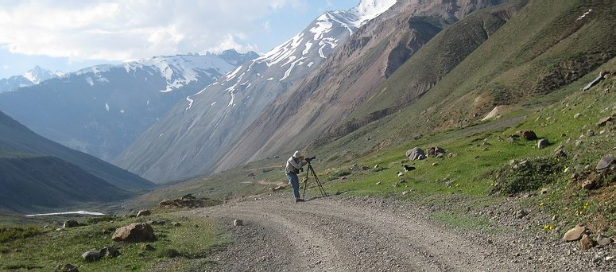
"Digiscoping in the High Andes" - foto: María Elena Earnshaw
DAY 1 - Arrival at Santiago airport. After pickig up the car we drove to our first "base camp", a 2-hour trip along a paved road, soon getting dark, and arriving at about 10 pm. We took the Camino al Volcán, which starts in the south-eastern suburbs of Santiago, and followed up the valley of the Río Maipo towards the cordillera. This deep canyon is known as Cajón del Maipo, and provides a very convenient vehicle access to the high mountains. All along the valley is a wide selection of bungalows and hotels, and our choice was for a place that would be as far up the valley as possible so we could have quick access to the gravel roads we planned to take over the next 3 days.
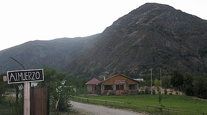
Entrance to Parque Almendro where we rented a bungalow for 4 nights. We normally made our own meals in the kitchenette, but on one occasion we also enjoyed a delicious dinner at the restaurant . 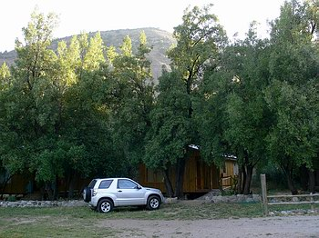
The bungalow and hired car. The place was very comfortable, clean, and we were very well looked after. We were lucky that the holiday season had not yet begun in earnest, so we had the whole place to ourselves. It has an excellent pool (which we didn't use), and the grounds border the torrential Maipo river, that can be heard roaring day and night.
Address: Camino al Volcán 38.713 - km 53 Cajón del Maipo.
Tel: (56 2) 861 2301 Celular: (56 9) 225 6105
http://www.parquealmendro.cl/
The hire car was a Suzuki Grand Vitara Mini 4x4 (fixed). Many assured us that a 4x4 was not needed, but without one we might have refrained from crossing some fords, and that would have impacted the bird count. The melting snow had turned small streams into little torrents.
Common birds around the bungalow were: Common Diuca-Finch, Austral Thrush, White-crested Elaenia, Rufous-collared Sparrow and California Quail. We were told we should see Moustached Turca and Pygmy-Owl, but dipped these here.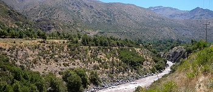
A view of the Río Maipo 1 km upstream from Parque Almendro. Apart from the trees and bushes, the vegetation on the far bank consists mainly of tall cacti.
DAY 2 - Drive up the El Yeso river, one of the tributaries of the Maipo. We would spend our first day doing the most exciting excursion of the trip, as it would yield many new mountain birds: Miners, Ground-Tyrants, Sierra-Finches and others, that I hoped to see and photograph. Weatherwise we had an exceptional day. Being a Sunday one would normally expect to have many tourists from Santiago, but on this day the national presidential elections were being held, so we hardly saw a vehicle! Mining activities in the area imply meeting many trucks along the narrow roads, but we were also very fortunate at El Yeso as activities had been suspended this year. This day we reached the 15.5 km mark above the El Yeso dam.
DAY 3 - After an easy-going morning and visiting a nearby town to shop for provisions, we set off after midday up the other tributary, passing Lo Valdes and reaching La Colina hot springs. Along this road we saw some of the same birds as on the previous day and met up with the mining activity.
On DAY 4 we repeated the same drive as on DAY 2, but extending to about 20 km beyond the El Yeso dam, nearly making it to the El Plomo hot springs.
Following are photos of the places we visited, and after that, the birds taken during these 3 days.
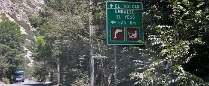
Turning point!
The gravel road that follows up the El Yeso valley begins some 5.5 km upstream from Los Almendros. What excitement to be here at last, after having hovered over the area so many times using Google Earth, and dreaming of reaching this area! Here is where the real adventure begins, with high chances of seeing many bird species I had longed for!
The milestones restart here from zero, and will again reset at the dam which, as the sign says, is 25 km away.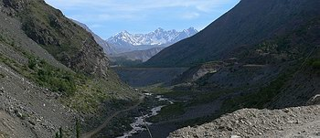
The gradual climb up the El Yeso river begins. It's fairly early, so the mountains still cast a shadow. We are at 1,300 m, and the dam is at 2,550 m. On DAY 2 we reach 2,700 m and on DAY 4 we make it to 2,900 m. 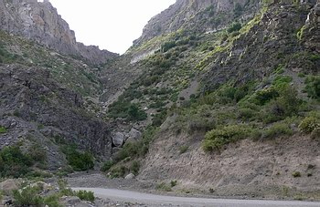
Km 4 - One of the crags which are famous for - you named it - Crag Chilia (Chilia melanura). Here we saw Chilean mockingbird and Moustached Turca. We saw Crag Chilia at about km 6, having skilfully detected its presence from a very brief alert call.
As one climbs up the valley the vegetation tends to become lower and thinner. Apparently many areas continue to have snow into November.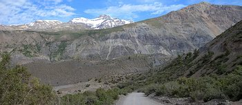
The view becomes more and more lovely. We saw or heard Long-tailed Meadowlark, Greater Yellow-Finch, Austral Blackbird, Mourning Sierra-Finch, Grey-hooded Sierra-Finch and Yellow-rumped Siskin, amongst other things. 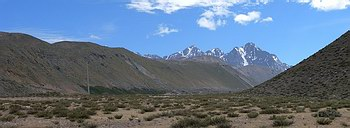
View of one of the more arid flats. 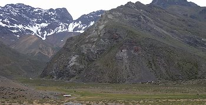
At this flat green area in the foreground I saw the first ground-tyrant, and was able to get close up to my first-ever Black-winged Ground-Dove and a pair of Grey-breasted Seedsnipes Other ground-tyrants were seen mostly in flat areas, and we began to see Rufous-banded Miners.
In other greens I saw Cinclodes, normally Bar-winged, but must have lost the opportunity to identify other varieties, notably in one case, past km 11 (beyond the dam), where I "just" lost getting a potentially good photo of another cinclodes species, that remained undetermined.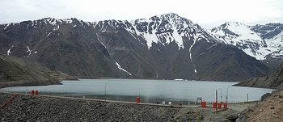
Finally at the dam - creating more expectation to see yet other birds- The lake is about 6 km in length, and the road that takes you around it is a single-lane winding cliff-hanger that clings to the mountainside for 3 or 4 km. Every so often there is a short bay made for crossing other vehicles. During the 4 times we did this section we only crossed 2 vehicles (one of which was the only mining truck we saw). We were never sure if it was better to stay on the side of the lake, our tires nearly suspended 3 cm from the natural precipice, or to keep next to the wall, piled high with overhanging lose rocks! 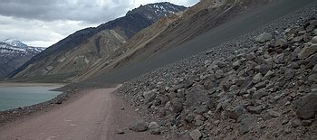
After the worst part was done (photos withheld not to disturb you!), we still had a 1 km section along the bottom edge of a gigantic ramp of tumbled rock. This smooth-looking ramp formed a slope from the road, at 2,600 m, stretching all the way up to the top of the mountain at 4,500 m, as it gradually became steeper. You can see it on Google Earth! Fallen rocks on the road must occur daily. I was hoping to see Andean Gull, and Mountain Parakeet, but dipped these. On Day 3 beyond the lake we saw a Mountain Caracara fly cross the valley, climb thermals and loose itself in high rocky crags.
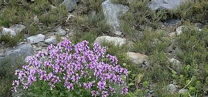
After nearly reaching the far side of the lagoon we stopped and walked up a barren hillside, strewn with rocks and coved with low vegetation and some flowering bushes. Only here did we see White-sided Hillstar, twice, briefly, so no photos. Also here were Plumbeous Sierra-Finch, Scale-throated Earthcreeper, Cordilleran Canastero, Grey-hooded Sierra-Finch and we saw the majestic overfly of a Variable (Red-backed) Hawk. Rufous-collared Sparrows, of course, are everywhere! 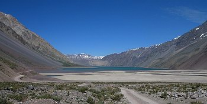
The lake as seen on Day 4 from the eastern side, after doing the narrow cliff-side road. On the left, in smooth greyish-purple tones, is the lower section of the gigantic ramp of stones mentioned above. We had seen White-browed Ground-Tyrant by now, and were to come across some very few Black-fronted Ground-Tyrants.
Between km 13 and 14 I explored what seemed like a high-altitude version of a reedbed, but no DSPs here (see later). Further up the valley is the entrance to the "park", 15.5 km from the dam, where a fee is paid to reach the El Plomo springs, and the road now becomes a little rougher.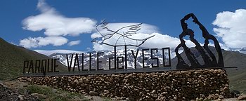
This monument marks the entrance to the park.
Although we did not complete the road to the end, it seems to take you right to the base of the very mountain range that separates Chile from Argentina. On the last day, at km 18, we saw Upland and Andean geese feeding on a green terrace of gigantic proportions on the opposite side of the river. We stopped at km 20 and here I saw, photographed and filmed Ochre-naped Ground-Tyrant through the telescope. It was a pair and they seemed to be nesting.
Despite the altitude and being so close to mountain ranges, we saw no condors.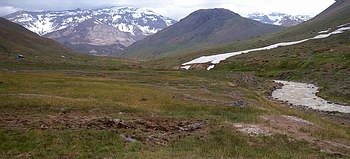
This photo marks an important spot for it was in this green bog that I saw, filmed and photographed one of the highlight birds of the trip, the Diademed Sandpiper-Plover. or DSP for short (Phegornis mitchelli)!!! The bird is in this photo, by the water in the muddy patch, but is too small to make it out. I spent over an hour taking shots from a distance with my 2 cameras, and making a "videoscope" clip (see below). You can see there is still snow about, but it was not going to last much longer.
It was great to see this bird on the first day, as it relaxed things very much!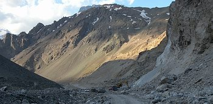
This photo is from Day 3, when we drove up the other valley as far as La Colina springs. Great views, a few birds, and a lot of mining activity. Basically the mountain is being scooped up, as the photo shows. Behind you can see roads zigzagging up the mountainside, which the lorries use, only to come back down carrying a bit more mountain in the back. Apparently this is plaster mineral (Gesso), that is processed near Lo Valdes.
These are shown roughly in order of appearance, that is, of increasing altitude, but always bunching species together.
Repeat photos taken near Farellones, on DAY 5, are also bunched here, so as not to revisit the same ones later.
Tenca - Chilean Mockingbird - Mimus thenca - NEAR ENDEMIC
Chiricoca - Crag Chilia - Chilia melanura - ENDEMIC
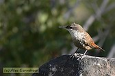
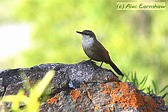
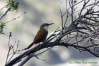
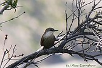
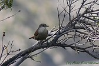
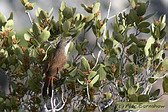
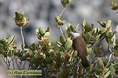
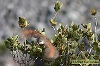
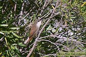
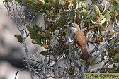
Turca - Moustached Turca - Pteroptochos megapodius - ENDEMIC
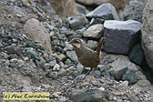
Pato de Torrente - Torrent Duck - Merganetta armata
Jilguero Grande - Greater Yellow-Finch - Sicalis aureoventris


Cabecitanegro Andino - Yellow-rumped Siskin - Carduelis uropygialis


Comesebo Andino - Grey-hooded Sierra-Finch - Phrygilus gayi


Palomita Cordillerana - Black-winged Ground-Tyrant - Metropelia melanoptera

Agachona de Collar - Grey-breasted Seedsnipe - Thinocorus orbignyianus


Codorniz de California - California Quail - Callipela californica


Loica Común - Long-tailed Meadowlark - Sturnella loyca

Churrín Andino - Andean Tapaculo - Scytalopus magellanicus


Yal Plomizo - Plumbeous Sierra-Finch - Phrygilus unicolor


Caminera Colorada - Rufous-banded Miner - Geositta rufipennis


Bandurrita Común - Scale-throated Earthcreeper - Upucerthia dumetaria


Canastero Pálido - Cordilleran Canastero - Asthenes modesta


Dormilona Ceja Blanca - White-browed Ground-Tyrant - Muscisaxicola albilora


Dormilona Frente Negra - Black-fronted Ground-Tyrant - Muscisaxicola frontails

Dormilona Fraile - Ochre-naped Ground-Tyrant - Muscisaxicola flavinucha


Chorlo de Vincha - Diademed Sandpiper-Plover - Phegornis mitchelli - NEAR THREATENED


After three productive but tiring days in the Cajón del Maipo, we set off early to try and avoid the Santiago rush hour, as we needed to cross the eastern side of the city to the north-eastern corner. After Las Condes we began the climb through an attractive hilly area. We initially missed the turnoff to Farellones but thanks to that a little further on we got a great roadside view of Chilean Flicker clinging to its nest placed at a road bank. See photos, all taken from inside the car.
The steep climb to Farellones has a succession of 40 hairpin bends. We stopped 2 or 3 times and heard the endemic Dusky-tailed Canastero (Asthenes humícola) but never saw it. We took the turnoff to Valle Nevado and at the impressive cliffs that overlook the valley got photos of Mountain Caracara. We then stopped at a nearby promontory. On this lovely meadow we saw more Band-tailed Miners, Scale-throated Earthcreeper, Yellow-rumped Siskin and Black-winged Ground-Dove. We also got Black-billed Shrike-Tyrant and Band-tailed Sierra-Finch, with Andean Condors flying overhead. After lunch we descended back towards Santiago, took a modern freeway below ground, and then Route 5 north, soon turning off again for Lampa. We found the famous reedbeds to be completely dry, party due to a drought in the region but also as water that normally runs into the wetland is now being used for agriculture. On the left side of the road we saw heavy construction work, with earth movement. Apparently a foreign investor is building a golf course, and they will also "recreate" a wetland!
We continued on past Til-til, taking a lovely road through the mountains to Limache. Here the whole town was in gridlock, as raging wildfires had forced road closures and traffic was concentrating here. We lost nearly 2 hours, but finally reached Viña del Mar. We headed north, stopping quickly at Reñaca where we saw Ruddy Turnstones, then arrived by night at a cheap bungalow place in Quintero, our stay-over town for the night.
The following photos cover new bird species taken in the Farellones area.
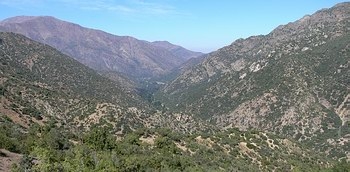
View of the valley of the Mapocho river, as we climb towards Farellones. Carpintero Pitío - Chilean Flicker - Colaptes pitius


Cóndor Andino - Andean Condor - Vultur gryphus


Matamico Andino - Mountain Caracara - Phalcoboenus megalopterus


Gaucho Serrano - Black-billed Shrike-Tyrant - Agriornis montana


Yal Platero - Band-tailed Sierra-Finch - Phrygilus alaudinus


I was unsuccessful in tracking down Surfbirds in the rocky areas along the coast at Quintero. However, in the gardens close to the coast there were several Rufous-tailed Plantcutters, Black-chinned Siskins. and a Fire-eyed Ducon with chicks.
We set off towards the very elegant town of Cachagua to see the Humboldt Penguins that breed on a small island just off the coast. We parked at an access to the beach and walked to the rocky promontory to get as close as possible for digiscoping these curious sea birds that live here among tall cactus plants!
We saw small flocks of Gunay Cormorants, Peruvian Boobies, Peruvian Pelicans and Kelp Gulls. On the rocky coast were Blackish Oystercatchers and both vultures. On the beach we saw Whimbrel, Lapwings & Franklin's Gull. We also had Plain-mantled Tit-Spinetail and Seaside Cinclodes. In the gardens were Austral Blackbird, White-crested Elaenia and more plantcutters. Retuning to the car we surprised a Giant Hummingbird, which got away before getting a photo, so we spent an hour at the plaza, as we had been told they were commonly seen here. However, there was no show, but we did add Thorn-tailed Rayadito.
We rushed south to Reñaca but arrived after midday so the light was not too good for digiscoping the birds on the famous "Reñaca Rock", an outcrop used by many coastal birds. We spent an hour here while I digiscoped 4 species.
After tending to some urgent needs and a quick lunch at a Viña del Mar shopping center, we took the highway heading for Santiago, and from there headed south on the freeway to Talca, a further 250 km from the capital. We arrived here just before sunset and headed east on a paved road to Vilches, although it turned into a very dusty gravel road for the last 10 km of so . We were to stay at a bungalow in Vilches Centro for 3 nights, which would give us 2 full days to find birds that dwell in the Andean Beech (Nothofagus) forests.
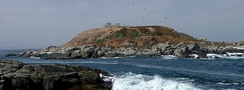
The penguin breeding colony island at Cachagua.
The yellowish vegetation are basically tall cacti.
On the island were many Neotropical Cormorants, Peruvian Pelicans, vultures and Kelp Gulls. On the mainland coast we briefly saw a Seaside Cinclodes (Cinclodes nigrofumosus) flying to his rocky refuge.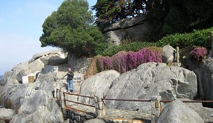
The coast opposite the island has an attractive walkway which makes an excellent viewing area, especially useful at high tide. 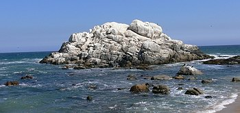
The Reñaca rock (photo taken in May 2006). Here we saw many Peruvian Boobies, Pelicans and Inca Terns. 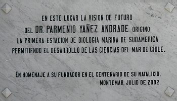
The Estación de Biología Marina is located on the beach, between the main road and the "rock". If you wish to get on the beach to take photos of the birds as close as possible to the island, it is advisable that you first seek permission here. PHOTOS TAKEN AT CACHAGUA
Pingüino de Huboldt - Humbolt Penguin - Spheniscus humboldti
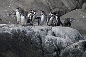
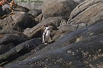
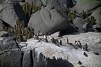
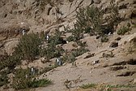
Cormorán Guanay - Guanay Cormorant - Phalacrocorax bougainvillii


Tero Común - Southern Lapwing - Vanellus chilensis
Playero Trinador - Whimbrel - Numenius phaeopus (hudsonicus)

Gaviota Cocinera - Kelp Gull - Larus dominicanus
Ostrero Negro - Blackish Oystercatcher - Haematopus ater

Jotes (Cabeza Negra y C. Roja) - Black & Turkey Vultures

Rara - Rufous-tailed Plantcutter - Phytotoma rara


Cabecitanegra Austral - Black-chinned Siskin - Carduelis barbata (at Quintero)

PHOTOS TAKEN AT REñACA
Gaviotín Inca - Inca Tern - Larosterna inca
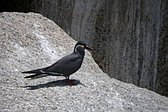
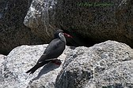
Piquero - Peruvian Booby - Sula variegata
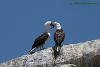
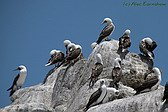
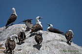
Pelicano - Peruvian Pelican - Pelicanus thagus
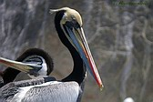
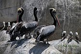
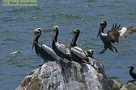
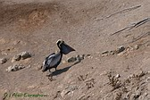
DAY 7 and 8 - Nothofagus forest around Vilches
Vilches is in the 7th Region. There seems to be no city center at all, as it basically consists of properties that stretch over some 15 km of gravel road that heads eastward up the hillside. The area is divided into three sections Vilches Bajo, Centro and Alto (low, middle and high).
We stayed at a bungalow in the "Los Nogales" tourist center, in Vilches Centro. The property has a number of attractive and very functional independent little houses, a main restaurant, gardens and a swimming pool with pool-side installations. They also have a hot tub and are building some sort of indoor pool. However, we used none of these, as we focalized on birds all day.
Behind the bungalows at "Los Nogales" there is an attractive native forest. The trees that gave shade to our bungalow were home to Thorn-tailed Rayaditos and White-throated Treerunners. Within the grounds I detected Chilean Flicker, Striped Woodpecker, Chilean Pigeon, Dark-bellied Cinclodes, Black-chinned Siskins, White-crested Elaenia, etc., but had no luck at all during my early morning photo walks. In the surrounding areas some forests have been converted to implanted pine.
During our first day we drove up the gravel road for about 25 minutes to visit a reserve in Vilches Alto, the "área de Protección Vilches". Here we walked various trails and spent a magical moment surrounded by a family of Magellanic Woodpeckers, and then with a pair of Chestnut-throated Huet-huets.
Next day we returned to Vilches Alto, but this time entered the "Reserva Nacional Altos del Lircay", the Lircay being a river that runs from the cordillera down to the sea. The forest here is Nothofagus. The gates to the reserve open at 9 am and then you must do a 2 or 3-km drive uphill to the warden's office, where you pay an entrance fee and can be informed about the trails. You must leave the car here and must plan your day carefully, as the gates close again at 4 or 5 pm (depending on the bus service timetable, used by the staff to get back to their homes). You can of course enter the reserve earlier and leave later, and even camp along the trail, but this implies leaving your car behind at the entrance gates and adding the 2-3 km uphill walk to the reception - although this is probably not a big deal if you are prepared for a long hike, since hereafter the main circuit is also uphill! Doing the entire circuit could require 2 days or more to complete. One alternative is to go up on horseback, and arranging horses seems to be no problem as we saw several guides returning with their horses. We went up by car, paid, received instructions, and then did a short trail that goes by the long name of "Alewenmawida" where we expected to see Chucao Tapaculo (though we only got to hear their call) and Chestnut-throated Huet-huet, of which we saw 3 or 4, but they proved to be very skulking indeed. We then walked up a small section of the main trail and saw Green-backed Firecrown. I spent over an hour fruitlessly trying to improve my photos of Des Mur's Wiretail, which lived on a slope cavered with low bamboo. I had photographed these rather poorly a year before at Concepción, Chile and could do no better this time. Finally, after leaving the park and as we slowly drove down the very rocky and dusty gravel road lined with native forest, I heard a Striped Woodpecker, and this resulted in some decent photos.
VILCHES
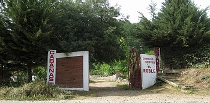
Entrance to the place where we had our cabin. 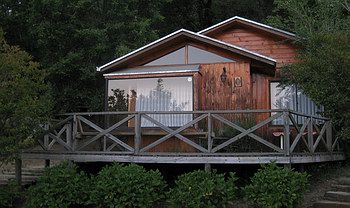
The attractive bungalow at Los Robles, which had a nice deck. 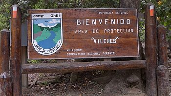
Entrance sign to the Vilches Alto protected area. 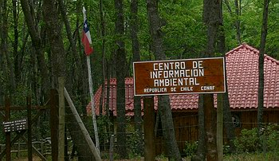
Visitor's Center at the Vilches Alto reserve.
All this area is privately-owned, and must conform to some restrictions imposed by the national forest governing body CONAF (Corporación Nacional Forestal de Chile)View of the native forest taken from a sight-seeing point. The same forests from within...
ALTOS DEL LIRCAY
Carpintero Gigante - Magellanic Woodpecker - Campephilus magellanicus


Carpintero Bataraz Grande - Striped Woodpecker - Picoides lignarius


Colilarga - Des Mur's Wiretail - Sylviorthorhynchus desmursii


Huet-huet Castaño - Chestnut-throated Huet-huet - Pteroptochos castaneus - NEAR ENDEMIC

Cachudito Pico Negro - Tufted Tit-Tyrant - Anairetes parulus

By the last day I had still not photographed White-crested Elaenia, which had been with us at virtually every stop over the last week. On the last morning in Chile, minutes before getting in the car to leave for Santiago, I got a reasonable photo.
We drove 300 km to Santiago airport without a hitch, dropped off the car (after a 1-hour wait during which a large Dutch family went though all the hiring procedures with great language difficulties, credit-card payment and all, only to undo it all later, as they realized the insurance policy did not suit them). We finally boarded the plane and returned home, leaving behind a memorable trip, which for various reasons nearly failed to materialize.Fiofío Silbón - White-crested Elaenia - Elaenia albiceps
OTHER ANIMALS
REPTILES
EL YESO
Liolaemus moradoensis
Lagarto de Lo Valdés - Liolaemus valdesianus
Lagartija Negro Verdosa - Blackish-green Lizard - Liolaemus nigroviridis
SQUAMATA : LIOLAEMIDAE - Conservation status: Vulnerable
ALTOS DEL LIRCAY - VILCHES
Lagartija Esbelta, Lagartija Iridiscente, Lagartija Bicolor - Thin Tree Iguana - Liolaemus tenuis
SQUAMATA : LIOLAEMIDAE
MAMMALS
Roca de Reñaca
Lobo marino - Southern Sea Lion - Otaria byronia
INSECTS & SPIDERS (from Vilches)
Chilean Magnifiscent Beetle - CARABIDAE: Ceroglossus chilensis colchaguensis
COLEOPTERA - BUPRESTIDAE: Polycesta costata
THERAPHOSIDAE: Homoeomma chilensis
Do drop me a line if you found this useful or if you have any queries I could help with - Alec Earnshaw
Main page of this site: www.fotosaves.com.ar


{kind=link}
{kind=link}
{kind=link}
{kind=link}
{kind=link}
{kind=link}
{kind=link}
{kind=link}
{kind=link}
{kind=link}
{kind=link}
{kind=link}
{kind=link}
{kind=link}
{kind=link}
{kind=link}
{kind=link}
{kind=link}
{kind=link}
{kind=link}
{kind=link}
{kind=link}
{kind=link}
{kind=link}
{kind=link}
{kind=link}
{kind=link}
{kind=link}
{kind=link}
{kind=link}
{kind=link}
{kind=link}
{kind=link}
{kind=link}
{kind=link}
{kind=link}
{kind=link}
{kind=link}
{kind=link}
{kind=link}
{kind=link}
{kind=link}
{kind=link}
{kind=link}
{kind=link}
{kind=link}
{kind=link}
{kind=link}
{kind=link}
{kind=link}
{kind=link}
{kind=link}
{kind=link}
{kind=link}
{kind=link}
{kind=link}
{kind=link}
{kind=link}
{kind=link}
{kind=link}
{kind=link}
{kind=link}
{kind=link}
{kind=link}
{kind=link}
{kind=link}
{kind=link}
{kind=link}
{kind=link}
{kind=link}
{kind=link}
{kind=link}
{kind=link}